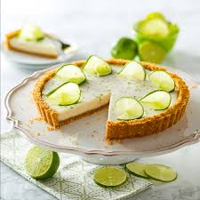
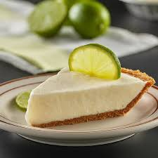

Ingredientes
- 200 g de galletas María
- 100 g de mantequilla derretida
- 1 lata de leche condensada
- Jugo de 4 limones
Preparación
Tritura las galletas y mézclalas con la mantequilla. Coloca en un molde formando la base. Mezcla la leche condensada con el jugo de limón y vierte sobre la base. Refrigera por al menos 2 horas.
¿algo rico para sorprender a tu suegra?
el pai es perfecto si quieres hacer una receta muy deliciosa y que no necesitas estudiar gastronomia para hacerla
 ⬅ Volver al inicio